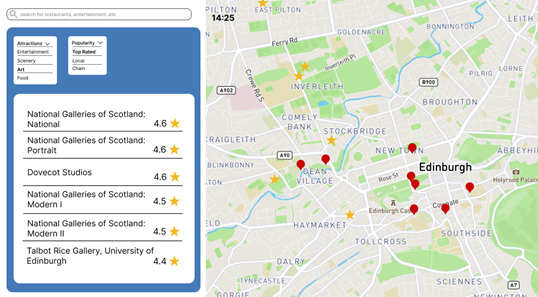
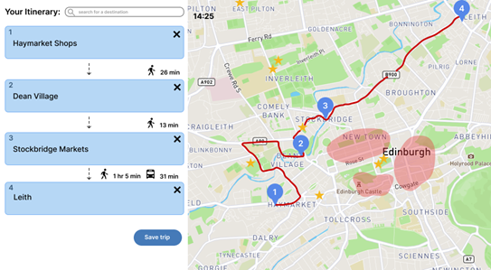

Design Journey
We conducted fieldwork to understand tourist behavior and their interactions with the city of Edinburgh during the Fringe Festival.
- Focus Group: Revealed awareness gaps about overtourism and diverse preferences.
- Participatory Workshop: Observed users planning routes with Fringe maps.
- Interviews: Conducted with the Tourist Office and Joshua Ryan-Saha (TravelTech).
Identifying the Problem
Tourist sites in Edinburgh are heavily centralized, creating congestion in key areas.
Key Theoretical Concepts
- Tourism-mobility interaction
- Overtourism and urban livability
- Lefebvre’s Right to the City
- Place alienation
City Voices & Data
"Tourism has already made living in Edinburgh less viable for young folk." – Twitter thread
"Edinburgh has been listed... as one of the world's worst hotspots for 'overtourism'." – Metro News
Focus Group Highlights
- Low awareness of overtourism
- Subjective preferences and interests
- High willingness for active exploration
"There is so much to do that is hidden away..."
– Student at UoE
Participatory Design Workshop
Participants mapped their routes, discussed interests, and showed high variability in planning styles.
Our Solution: FringeEasy
FringeEasy is a map-based application that promotes lesser-known destinations, active travel, and community engagement.

Ranking system to guide crowds away from hotspots

Smart map with real-time tourist congestion indicators
Gamification for Engagement
FringeEasy includes gamified elements to motivate users to explore new places.
- Points and challenges
- Badges like “Hidden Gem Explorer”
- Leaderboards and route themes